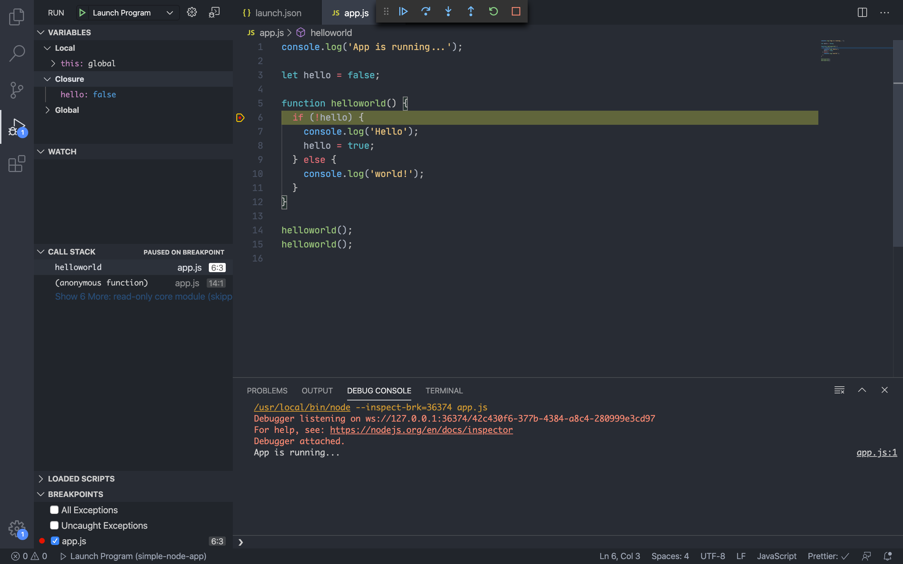

Debugging 101
Het principe van debuggen is erg belangrijk om te weten en kunnen als programmeur. Maar hoe werkt dat debuggen eigenlijk? De definitie van debuggen is: "het opsporen en verhelpen van bugs in computerprogramma's en elektronische hardware". Ook heeft je favoriete code editor en browser een speciale debug console. Maar veel verder dan console.log() kom ik eigenlijk nooit. Met dit artikel wil ik onderzoeken hoe men debuggen kan aanpakken.
Voor het debuggen
Door middel van debuggen kan men zijn code stap voor stap laten uitvoeren om zo het exacte punt te vinden waar een fout - bug - zit. Voordat men begint met debuggen is het belangrijk om antwoord te geven op de volgende twee vragen:
- Wat moest er gebeuren?
- Wat gebeurde er in plaats daarvan?
Door antwoord te geven op de bovenstaande vragen kan men soms al een beter idee krijgen waar in de code het precies fout gaat.
Let goed op Errors
Ook moet men opletten of de code een bepaalde error geeft. Errors in talen als JavaScript geven vaak al aan wat voor een fout het is en op welke regel dit bevind. Neem bijvoorbeeld onderstaande error. Hier staat duidelijk aangegeven wat het probleem is: 'Uncaught ReferenceError: tabs is not defined'. Erachter staat aangegeven waar precies deze error veroorzaakt werd: 'popup.js:17'. Dit betekent dat in popup.js op regel 17 de error werd afgevuurd. Ook staat er informatie over de bepaalde functie of het bepaalde event. In het geval van het voorbeeld is dit: 'HTMLButtonElement.changeColor.onclick'.
VSC debugger
De code editor die ik gebruik is Visual Studio Code (=VSC). VSC heeft een ingebouwde debugger. Deze debugger ondersteund Node.js en kan JavaScript, TypeScript en iedere andere taal die wordt getransformeerd naar JavaScript. Voor andere talen kan men via extensies ook gebruik maken van de debugger.
De debugger kan men openen door op het debugger icon te klikken of d.m.v. de toets-combinatie ⇧⌘D . Als men op Run and Debug of F5 drukt, probeert VSC het laatste actieve bestand uit te voeren. Echter is het meestal handiger om een launch.json bestand aan te maken. In dit bestand kan men debug instellingen zetten en opslaan.
Launch.json
Om een launch.json aan te maken drukt men op create a launch.json file. Dit maakt automatisch het bestand aan. Het bestand staat in de root folder in een .vscode folder.
Het launch.json bestand dat gegeneert is:
{
"version": "0.2.0",
"configurations": [
{
"type": "node",
"request": "launch",
"name": "Launch Program",
"skipFiles": [
"/**"
],
"program": "${workspaceFolder}/app.js"
}
]
}
Niet iedere configuraties van debuggers zijn hetzelfde.
Launch vs attach
VSC heeft twee core debugging modes: launch en attach.
Launch: is een recept voor hoe de app in debug modus gestart moet worden, voordat de VSC debugger zich aan de app hecht.
Attach: is een recept voor hoe VSC debugger zich aan een app moet hechten aan een app of proces dat al loopt.
In launch.json kan men een nieuwe configuratie zetten. In de debug tab kan men een debug configuratie selecteren en deze starten.
Breakpoints
Een breakpoint is simpel gezegd een stop moment op een regel. Op de regel waar een breakpoint is gezet zal de applicatie stoppen.
Conclusie
Voordat men begint met debuggen is het van belang om antwoord te geven op de vragen: wat moest er gebeuren? en wat gebeurde er in plaats daarvan?. Ook is het belangrijk dat men naar errors kijkt. In de error staat vaak al wat het probleem is en op welke regel deze zich bevind. VS Code heeft een debugger ingebouwd. Om te debuggen in VS Code moet men een launch.json aan maken. Hierin kan men de instellingen aangeven. Bij het debuggen zijn breakpoints erg belangrijk. Een breakpoint is een stop moment op een bepaalde regel. Op deze regel zal de applicatie stoppen met draaien.